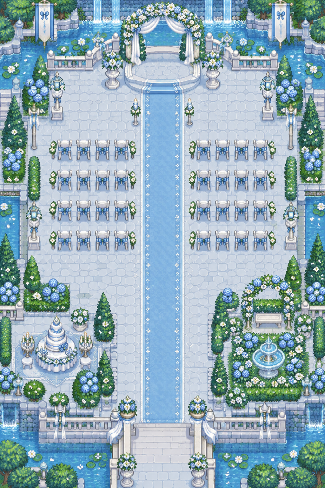
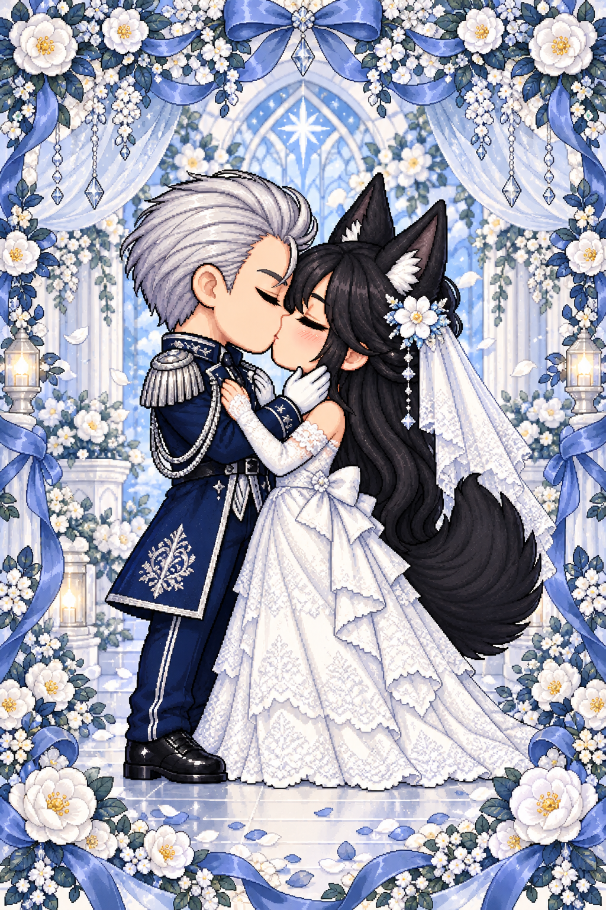

♡
A LITTLE BLUE WEDDING
伊薩克
＆
白暝
♫
換裝
藍色花園
歡迎來到我們的婚禮

伊薩克
白暝
鮑里斯
▼
你
同行夥伴
宴會廳 →
花園入口
沿著花道，向新人打聲招呼吧
THE WEDDING CEREMONY
請迎接新娘

♡ ♥ ♡
略過動畫
離開婚禮 · 拍張紀念照 ♡
WITH LOVE, ALWAYS
✧
ISAAC & BAIMING
YOU’RE INVITED
✦
今天，和誰一起來？
獨自赴約，或與一位夥伴分享幸福。
♙
單人前往
一個人的美好赴約
♙ ♙
雙人前往
同一支手機，兩人同行
挑選你的婚禮造型
你的造型
夥伴造型
✧
髮型
俐落短髮
可愛短鮑伯
浪漫長捲髮
輕盈馬尾
髮色
瞳色
僅調整瞳色，保留眼白與高光
服裝
藍色西裝
藍色洋裝
白色西裝
白色禮裙
準備好了，入場觀禮 ♡
返回人數選擇
入場時播放結婚進行曲，可隨時關閉音樂
WEDDING MOMENTS
送上祝福 ♡
繼續逛逛
A MEMORY TO KEEP
把今天的幸福帶回家
正在準備你的紀念合照…
下載紀念照
也可以長按照片，儲存到手機。
重新產生照片
返回婚禮